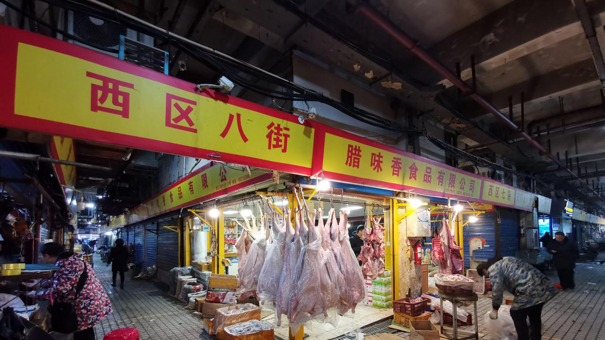
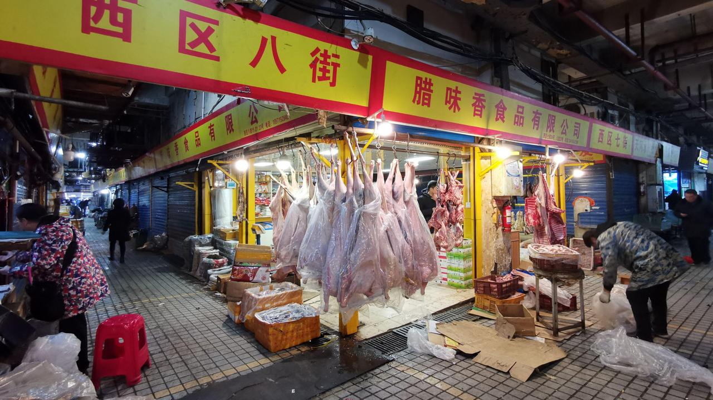

Australia hits China, WHO: “Our beef did not cause COVID”

Exclusive: Australia’s official analysis of the World Health Organization (WHO) report on the origin of COVID-19 is one of the central hypotheses that the virus may have been carried to imported frozen goods and originated outside China.Was completely rejected.
In this week’s WHO month-long survey of the origins of the pandemic, the virus is active outside the Wuhan market and may have been brought from elsewhere in Southeast Asia.However, no definitive result was obtained.
Chinese scientists have taken it one step further, suggesting that it may have been used in seafood and beef imported from countries such as Australia, India and the United States.
However, the Department of Foreign Affairs and Trade (DFAT) released a summary of WHO findings yesterday, rejecting the claim and saying there was no evidence that the virus could be carried into the package.
WHO and the International Food Safety Agency itself have previously stated that there is no clear evidence that respiratory illness is primarily due to 'primary transmission through human-to-human contact' and direct contact with droplets and aerosols.I was concluding.
'There is no clear evidence that COVID-19 is infected by food or food packaging, according to WHO, Food Standards Australia New Zealand, and international health and food safety agencies, including New Zealand,' DFAT officials said today.I concluded with the analysis I concluded.
'Australia is an exporter of safe, high-quality, price-competitive goods and services that are valued by Chinese consumers.Australia takes compliance with the requirements of importers seriously.'
Australia’s fisheries have already retreated to exports to China in recent months, largely due to diplomatic turmoil between the two governments, but have also rejected export proposals.
'There is no evidence that Australian seafood or Australian seafood packages are associated with COVID-19 infection,' Seafood Industry Australia CEO Veronica Papacosta told NewsCorp Australia.
Today, many exporters in the industry have the option of attaching official letters from the Ministry of Agriculture, Water and the Environment.This is the primary secretary of the Export Veterinary Services Department, outlining safety measures that are constantly being implemented and constantly reviewed.
'Australia has a strong regulatory system and appropriate hygiene and contamination to mitigate the risk of COVID-19 spreading within the scope of its activities at all Australian facilities involved in food processing and exports.We are obliged to implement control measures, 'freeman wrote in part.
The Australian Meat Industry Council has again refused to comment on the proposal that cold chain storage of imported beef from Australia could be involved in the COVID-19 epidemic.
In this week’s WHO report, direct animal-to-human transmission, introduction into intermediate animal hosts, then human infection, infection through cold chain foods (potential sources of infection or surfaces acting as food itself,).And four central hypotheses have been made (including laboratory-related cases).They added that the latter is very unlikely.
There are some studies on how long the virus survives on the surface, it can survive for some time, which depends on temperature and humidity, but is a known case of those who get the coronavirus from the surface of food packaging.there is no
However, it describes the Wuhan market, which is mainly identified as the central source by the Chinese Communist Party-owned mouthpiece media group Global Times, and promotes the theory that the virus was imported into China.He pointed out that the sale includes seafood and meat.Products from around the world, including Australian and Brazilian beef.
at first Australia hits China, WHO: 'Our beef did not cause COVID'
..
What Are The Main Benefits Of Comparing Car Insurance Quotes Online
LOS ANGELES, CA / ACCESSWIRE / June 24, 2020, / Compare-autoinsurance.Org has launched a new blog post that presents the main benefits of comparing multiple car insurance quotes.For more info and free online quotes, please visit https://compare-autoinsurance.Org/the-advantages-of-comparing-prices-with-car-insurance-quotes-online/ The modern society has numerous technological advantages.One important advantage is the speed at which information is sent and received.With the help of the internet, the shopping habits of many persons have drastically changed.The car insurance industry hasn't remained untouched by these changes.On the internet, drivers can compare insurance prices and find out which sellers have the best offers.View photos The advantages of comparing online car insurance quotes are the following: Online quotes can be obtained from anywhere and at any time.Unlike physical insurance agencies, websites don't have a specific schedule and they are available at any time.Drivers that have busy working schedules, can compare quotes from anywhere and at any time, even at midnight.Multiple choices.Almost all insurance providers, no matter if they are well-known brands or just local insurers, have an online presence.Online quotes will allow policyholders the chance to discover multiple insurance companies and check their prices.Drivers are no longer required to get quotes from just a few known insurance companies.Also, local and regional insurers can provide lower insurance rates for the same services.Accurate insurance estimates.Online quotes can only be accurate if the customers provide accurate and real info about their car models and driving history.Lying about past driving incidents can make the price estimates to be lower, but when dealing with an insurance company lying to them is useless.Usually, insurance companies will do research about a potential customer before granting him coverage.Online quotes can be sorted easily.Although drivers are recommended to not choose a policy just based on its price, drivers can easily sort quotes by insurance price.Using brokerage websites will allow drivers to get quotes from multiple insurers, thus making the comparison faster and easier.For additional info, money-saving tips, and free car insurance quotes, visit https://compare-autoinsurance.Org/ Compare-autoinsurance.Org is an online provider of life, home, health, and auto insurance quotes.This website is unique because it does not simply stick to one kind of insurance provider, but brings the clients the best deals from many different online insurance carriers.In this way, clients have access to offers from multiple carriers all in one place: this website.On this site, customers have access to quotes for insurance plans from various agencies, such as local or nationwide agencies, brand names insurance companies, etc.'Online quotes can easily help drivers obtain better car insurance deals.All they have to do is to complete an online form with accurate and real info, then compare prices', said Russell Rabichev, Marketing Director of Internet Marketing Company.CONTACT: Company Name: Internet Marketing CompanyPerson for contact Name: Gurgu CPhone Number: (818) 359-3898Email: cgurgu@internetmarketingcompany.BizWebsite: https://compare-autoinsurance.Org/ SOURCE: Compare-autoinsurance.Org View source version on accesswire.Com:https://www.Accesswire.Com/595055/What-Are-The-Main-Benefits-Of-Comparing-Car-Insurance-Quotes-Online View photos
Pictures Credit
Posted On: 2021-02-12T00:00:00
Posted By: NewsDesk

Content Date: 2021-02-12
Download Date: 2021-05-30
Document ID: L0C04CJQ6